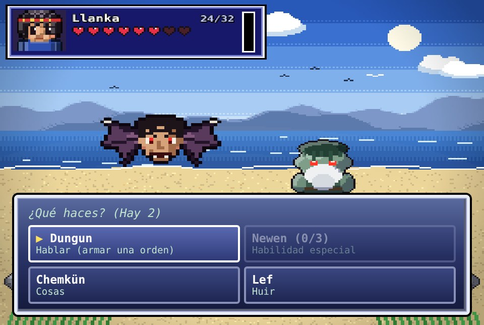

Un RPG para aprender mapudungunAn RPG for learning Mapudungun
Kewün ñi Newen
«La fuerza de la lengua.» Un RPG gratuito al estilo de los clásicos de 16 bits, con una regla que lo cambia todo: aquí el poder es la lengua. No hay espada ni hechizos; cada golpe es un verbo en mapudungun bien conjugado. El olvido avanza por el Wallmapu, y Millaray, o Llanka, sale a despertar a los ngen con lo único que puede vencerlo: la palabra. En español y en inglés, en el teléfono y sin conexión.“The strength of the language.” A free RPG in the style of the 16-bit classics, with one rule that changes everything: here, the language is the power. There is no sword and there are no spells; every blow is a well-conjugated Mapudungun verb. Forgetting is creeping across Wallmapu, and Millaray, or Llanka, sets out to wake the ngen with the only thing that can defeat it: the word. In Spanish and English, on your phone, and offline.
